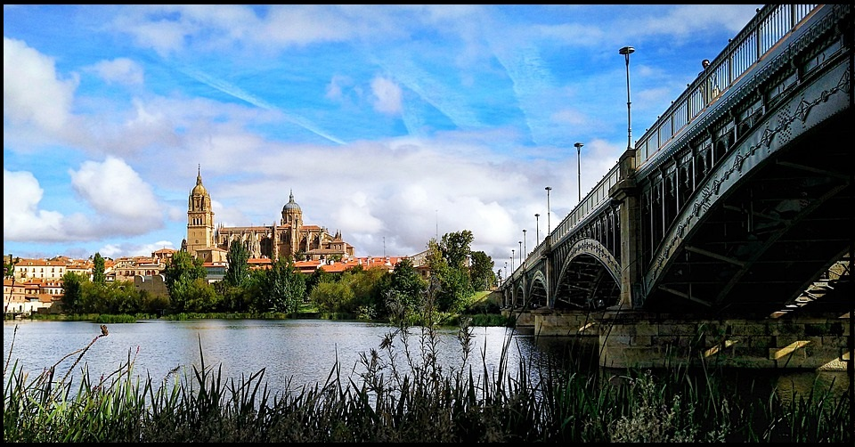
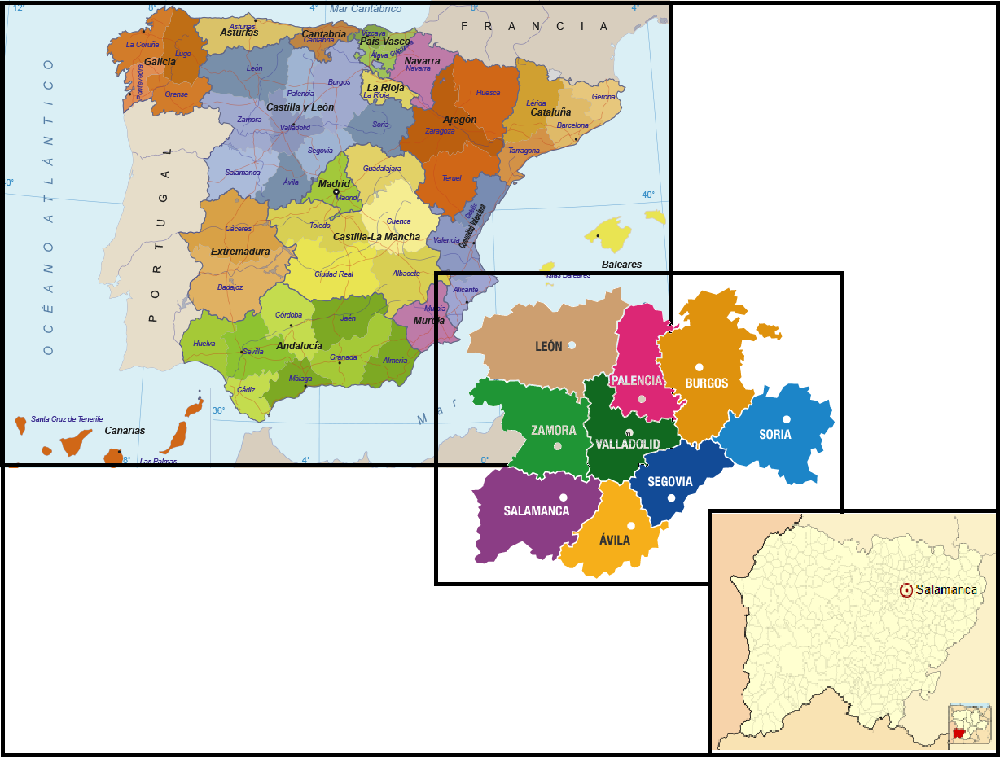
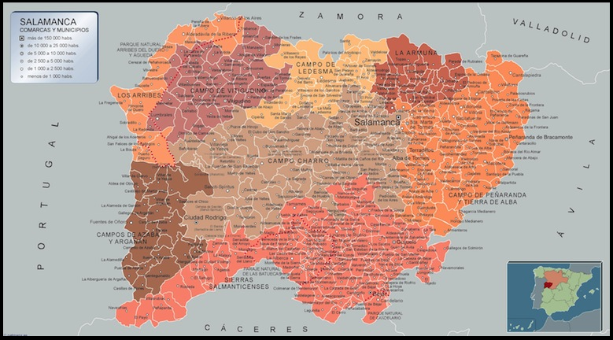

PROVINCIAS |
Localización Geografía Localidades Principales Historia Cultura Naturaleza Tradiciones Otros |
|---|---|
| Wikipedia Ávila Wikipedia Burgos Wikipedia León Wikipedia Palencia Wikipedia Segovia Wikipedia Soria Wikipedia Valladolid Wikipedia Zamora |

Poesía "EL POEMA A LA CELEBRE CIUDAD""En tanto que en mi cuerpo de mozo fuerza había y era mi juventud de sangre apasionada, ni tu gélido viento, Salamanca, me hería, ni tu nieve o tu escarcha ni tu fria nortada. Ni temia yo al Tormes de frio congelado que bajo mi pie seco muchas veces tuviera. Ahora pide mi helada sangre un lugar templado y mis miembros la ayuda de otro calor de fuera. Al tiempo que a nosotros la jarra ofrece hielo la grulla bien templado, joh, Nilo!, a ti te bebe. Mas cuando Libia hierve bajo el ardiente cielo a la región y al clima dei ártico se mueve. Huye el pastor dei frio por campos moderados mas retoma el rebano, llegado el clima suave. Mejor la muda bestia (y loslanudos ganados) quê lê es más conveniente, quê lê es más útil sabe. Porque el hombre, aun dotado de aptitudes mentales, de su pátria se apega a frios y calores. Debía haber aprendido de mudos animales que pátria es cualquier suelo que nos dê sus favores. Por ello, Salamanca, nodriza carinosa, que, en mijubilación, me dejas ir de aqui, a quien di de mi vida la parte más valiosa mientras a ti llegaban ambas lenguas por mi, escapo a los rigores que joven, soporté. C. de Miguel Ir arriba Localización de Salamanca La provincia de Salamanca se encuentra en España, pertenece a la comunidad de Castilla y León. Ir arriba Geografía de SalamancaIr arriba Localidades Principales de ÁvilaCitaremos algunas de las ciudades más representativas de cada comarca:
Ir arriba Historia de SalamancaIr arriba Cultura de SalamancaIncluyo un enlace a la guia de Cultura y Ocio disponible. Guía de Cultura y Ocio deL Ayuntamiento de SalamancaIr arriba Naturaleza de SalamancaVídeo de la naturaleza de Salamanca Ir arriba Tradiciones de SalamancaIr arriba Otras cosas de SalamancaDejo en el enlace a varias pág. de interés sobre el turismo en Salamanca, donde incluyen restaurantes, hoteles, rutas, etc. Turismo Salamanca Guía Turismo SalamancaIr arriba |